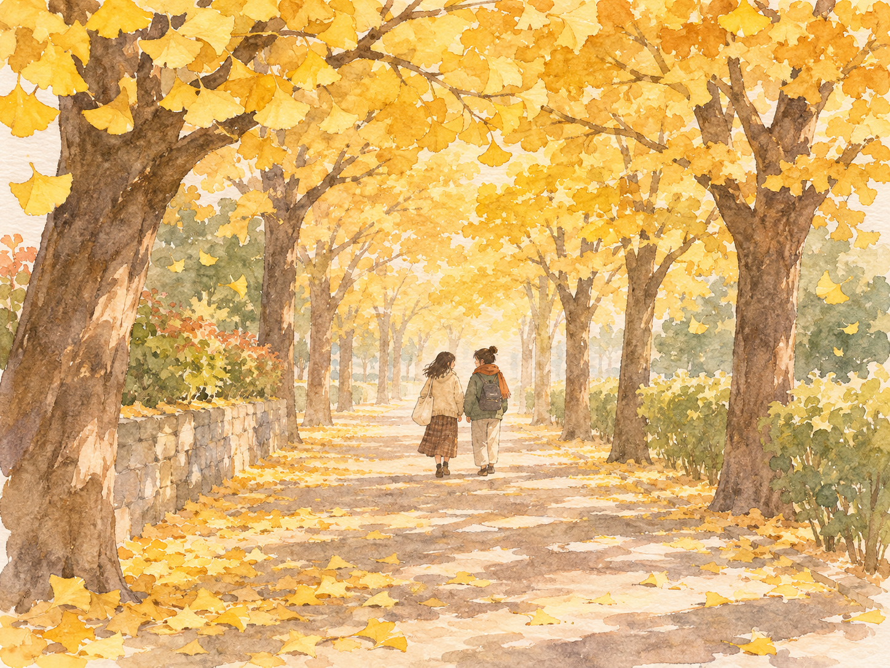

2024년 11월 17일
3교시 수업이 휴강이라는 문자를 받고 지은이랑 학교 뒤 은행나무길을 걷기로 했다. 며칠 사이에 잎이 다 노랗게 변해 있었다. 바닥에 쌓인 잎을 밟을 때마다 사각사각 소리가 나서 괜히 발을 더 크게 디뎠다.
지은이는 다음 학기에 휴학하고 제주도에서 한 달 살아 보고 싶다고 했다. 나는 아직 그런 건 생각도 못 해 봤는데, 듣다 보니 조금 부러웠다. 길 끝 편의점에서 따뜻한 캔커피를 하나씩 사서 벤치에 앉아 마셨다. 손이 시려서 캔을 두 손으로 꼭 쥐고 있었다.
집에 오는 길에 예쁜 은행잎 하나를 주워 전공책 사이에 끼웠다. 별일 없는 하루였는데 이상하게 오래 기억하고 싶다.
쇼츠 장면 4개
- 휴강 문자 받고 지은이랑 은행나무길을 걸었어
- 잎을 밟을 때마다 사각사각 소리가 나더라
- 지은이는 제주도에서 한 달 살아 보고 싶대
- 주운 은행잎은 전공책 사이에 끼워 뒀어